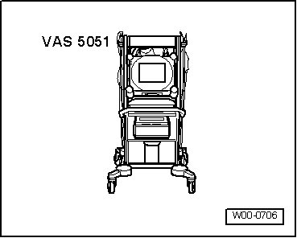

General Repair Information
General Repair Information
Transmission Construction and Function
Tools
A complete list of special tools and equipment used in this repair information is listed before each repair description and in: "Special Tools " in ServiceNet.
With smaller bolts with minimal tightening specifications, uncertainties often exist. torque wrench 2 to 10 Nm (VAG 1783) can be used on these bolts.

Transmission
• If covers are removed from the transmission or the transmission is without oil, do not run the engine and do not tow the vehicle.
• Always clean connection points and vicinity first and then loosen.
• When installing transmission, make sure alignment pins are correctly seated between engine and transmission.
• Place removed parts on clean surface and cover them so they do not become contaminated. Use foils or paper. Use lint free cloths only!
• Carefully cover or plug unpacked components if repairs cannot be performed immediately.
• Only install clean components: Only unpack replacement parts immediately prior to installation.
• Do not run engine or tow vehicle with oil pan removed or when there is no Automatic Transmission Fluid (ATF) in the transmission.
• Secure torque converter on a removed transmission to keep it from falling out.
• Before installing transmission, check torque converter position.
• Check the ATF level after installing.
O-rings, Gaskets and Seals
• Always replace O-rings, gaskets and seals.
• After removing gaskets and seals, always inspect the contact surfaces at housing or shaft for burrs and damage and repair them.
• Before installing a seal, lightly coat outer circumference and sealing lip with ATF, depending on the component location.

• Only use ATF for automatic transmission components. Other lubricating substances cause functional problems in the hydraulic transmission control.
• The open side of the seals face toward the oil.
• Check the ATF level after installing.
Automatic Transmission Fluid
CAUTION!
Be cautious when dealing with oil. Dispose of drained oil properly. Consider this: One drop of oil can contaminate 1000 liters of drinking water.
Do not mix any additives with the oil, and do not add other oils.
Drained oil must not be used to fill again.
ATF is obtainable as a replacement part.
Container size 1.0 L - replacement part no. (G 055 025 A2).
Capacity, refer to --> [ Capacities ]
Bolts and Nuts

• Loosen and tighten bolts or nuts for securing covers and housings in a diagonal sequence.
• The tightening specifications stated apply to non-lubricated nuts and bolts.
• Clean threads of bolts that were applied with locking fluid using a wire brush. Then insert bolts with locking fluid (AMV 185 101 A1).
• All threaded bores in which self locking bolts are threaded must be cleaned of remaining locking fluid using a tap. Otherwise there is danger that the bolts may shear when removed again.
• Replace self locking bolts and nuts.
• The tightening specifications stated apply to non-lubricated nuts and bolts.
Electrical Components
You have probably received a electrical shock at one time, when touching a metal item. The reason for this is the electrostatic charge that is built up in the human body. This charge can lead to malfunctions when contacting the electrical components of the transmission and the gear selector.
- Touch a grounded object, e.g. a water pipe or a hoist, before working on electrical components! Do not make direct contact with connector contacts.
Guided Fault Finding, OBD and Test Instruments

Before performing service work on the transmission, the cause of damage must be determined as exactly as possible via "Guided Fault Finding ".
Guided Fault Finding is performed using the vehicle diagnosis, testing and information system (VAS 5051).